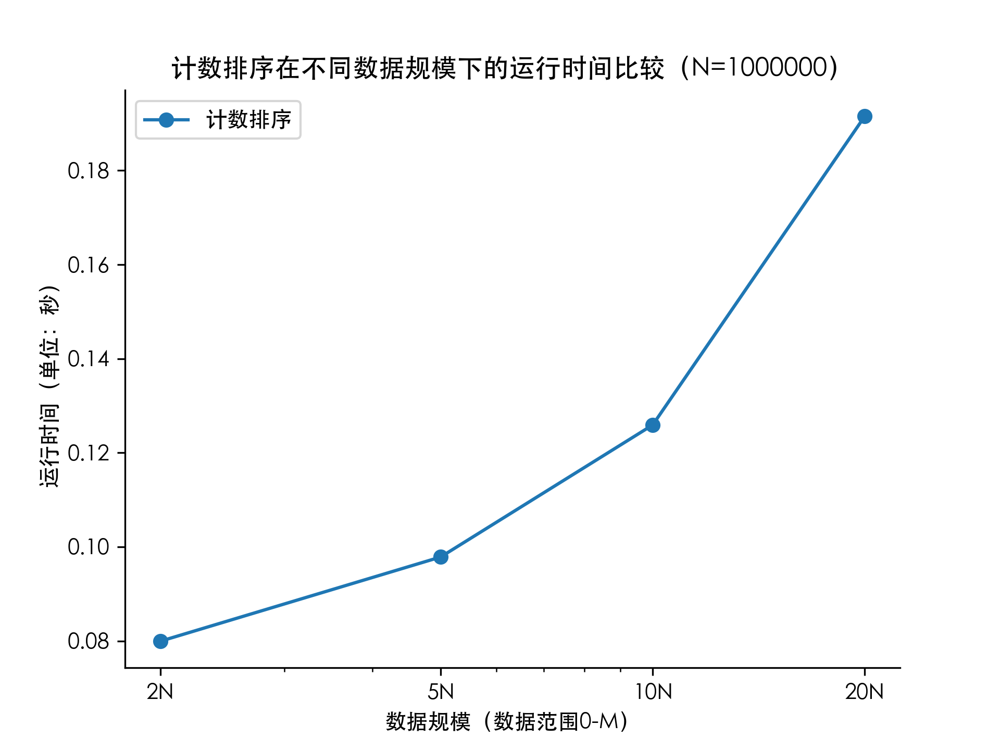

内容与设计思想
随机生成 范围内的N个整数；
编写计数排序算法；
在相同 的条件下， 分别等于 时的运行时间；
在相同 的条件下， 分别等于 时的运行时间。
实现代码
随机数生成器
1
2
3
4
5
6
7
8
9
10
11
12
13
14
| #include<iostream>
#include<fstream>
#include<cstdlib>
#include<ctime>
using namespace std;
int main(){
srand(time(0));
ofstream fout("data.txt");
int n, m;
cin>>n>>m;
for(int i = 0; i < n; i++) fout<<1 + rand() % (m - 1)<<" ";
fout.close();
return 0;
}
|
计数排序
1
2
3
4
5
6
7
8
9
10
11
12
13
14
15
16
17
18
19
20
21
22
23
24
25
26
27
28
29
30
31
32
33
34
35
36
37
38
39
40
| #include <iostream>
#include <fstream>
#include <cstdlib>
#include <vector>
using namespace std;
int main() {
ifstream fin("data.txt");
clock_t start, stop;
vector<int> a;
int n, tmp, maxn, minn;
maxn = -99999999;
minn = 99999999;
while (!fin.eof()){
fin>>tmp;
if(tmp > maxn) maxn = tmp;
else if(tmp < minn) minn = tmp;
a.push_back(tmp);
n++;
}
n--;
vector<int> c(maxn - minn + 1, 0), r(n);
start = clock();
for(int i = 0; i < a.size(); i++){
c[a[i] - minn]++;
}
for(int i = 1; i < c.size(); i++){
c[i] = c[i-1] + c[i];
}
for(int i = 0; i < a.size(); i++){
r[c[a[i] - minn] - 1] = a[i];
c[a[i] - minn]--;
}
stop = clock();
cout<<"Total time: "<<(double) (stop - start) / CLOCKS_PER_SEC<<endl;
fin.close();
return 0;
}
|
运行效率
时间记录使用了C++自带的clock()函数，通过在程序开头和结尾分别调用clock()函数并将两值相减，即可得到程序运行时间。结果如下：


总结
计数排序的时间复杂度为 。实验中 和 的值分别影响 和 ，随着 和 的增大，运行时间呈线性增长。考虑到计算机在实际运行时的系统调度偏差，实验结果基本与理论分析吻合。